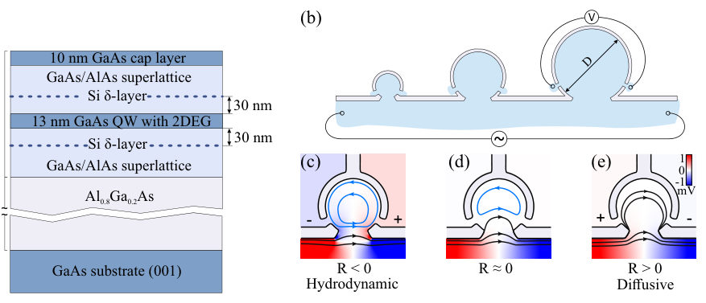
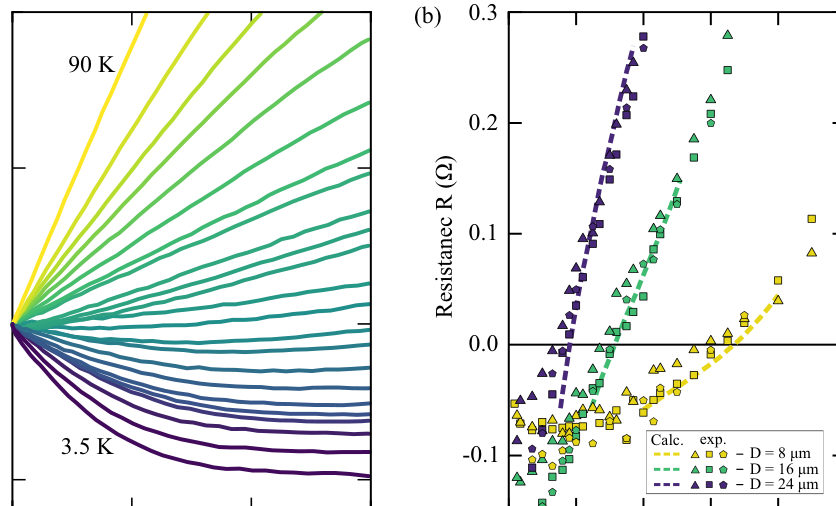

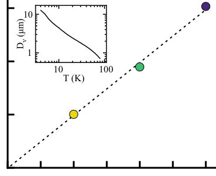
← Index · ← Previous · Next →
Authors: Zuriel Y. Yescas-Ramos, Andrés Álvarez-García, Huziel E. Sauceda
Type: theory · Category: numerical methods · PDF: https://arxiv.org/pdf/2604.27256v1
Analysis basis: full PDF text, analyzed in chunks
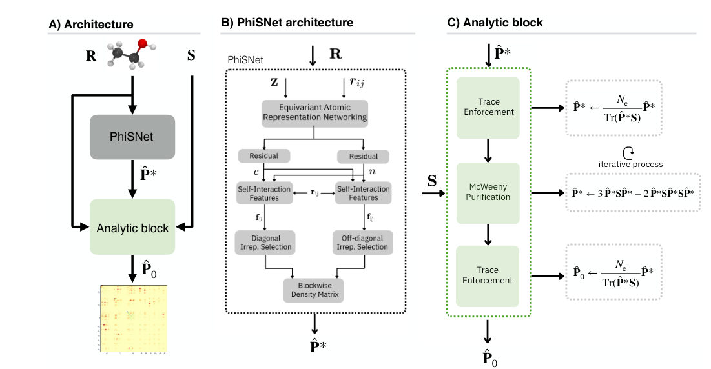
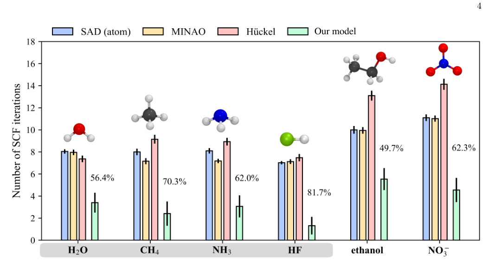
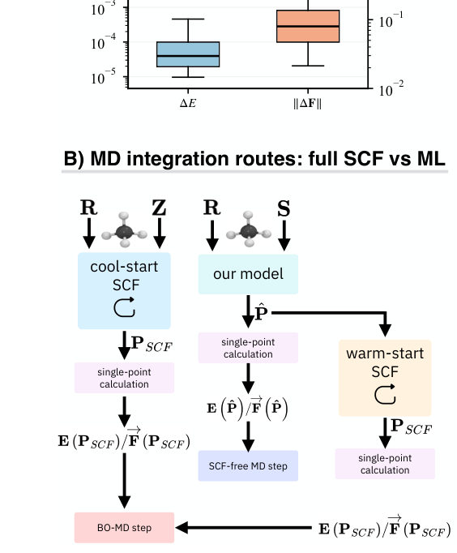
Summary. This paper introduces dm-PhiSNet, a machine learning model designed to accelerate quantum chemistry calculations by predicting high-quality initial density matrices. By enforcing physical constraints like idempotency and charge conservation, the model significantly reduces the number of iterations needed for SCF convergence and can even predict accurate forces in a single step.
Why it may be interesting. not directly relevant
Main problem. Accelerating Self-Consistent Field (SCF) workflows in electronic-structure theory by generating physically admissible initial density matrix guesses.
Main result. The dm-PhiSNet model reduces SCF iteration steps by 49-81% and provides accurate one-shot total energies and Hellmann-Feynman forces without explicit force supervision.
Method. A two-stage training protocol using an equivariant PhiSNet backbone combined with a lightweight analytic refinement block that enforces physical constraints like electron-number conservation and generalized idempotency.
Model / system. The model predicts one-electron reduced density matrices (1-RDMs) in an atomic-orbital basis for closed-shell molecular systems including H2O, CH4, NH3, HF, ethanol, and NO3-.
Key observables. One-electron reduced density matrices (1-RDMs), total energies, Hellmann-Feynman atomic forces, and SCF iteration counts.
Assumptions / limitations. The work focuses on closed-shell systems and assumes the effectiveness of projecting learned 1-RDMs onto the admissible manifold at negligible computational cost.
Figures summary. Figure 1 details the dm-PhiSNet architecture, including the equivariant backbone and the analytic refinement sub-blocks. Figure 2 shows the reduction in SCF iterations compared to standard initializations, and Figure 3 presents error distributions for energy and force norms.
Paper structure. The paper introduces the dm-PhiSNet architecture, describes the equivariant backbone and the analytic constraint enforcement, details the two-stage training protocol, presents benchmarks on molecular systems regarding SCF acceleration and one-shot accuracy, and discusses scalability and limitations.
We present \textsc{dm-PhiSNet}, a physically constrained \textsc{PhiSNet}-based equivariant model that predicts one-electron reduced density matrices (1-RDMs) directly from molecular geometries in an atomic-orbital (AO) basis for accelerated self-consistent field (SCF) workflows. Training follows a two-stage schedule with progressively introduced physically motivated objectives, and the resulting predictions are refined by a lightweight analytic block. This block enforces electron-number conservation, drives the 1-RDM toward generalized idempotency in the AO metric, and regularizes the occupation spectrum of the Löwdin-orthogonalized density. Across six closed-shell systems -- H$_2$O, CH$_4$, NH$_3$, HF, ethanol, and NO$_3^-$ -- the refined 1-RDMs provide SCF initial guesses that substantially reduce iteration steps by 49--81\% relative to standard initializations. Beyond SCF acceleration, the learned 1-RDMs yield accurate one-shot total energies and Hellmann--Feynman atomic forces without force supervision, indicating that the model captures chemically meaningful electronic structure. These results demonstrate that combining equivariant learning with analytic constraint enforcement provides a simple, general route to solver-ready density-matrix initializations and accelerated SCF workflows.
Papers from cond-mat.mtrl-sci, mes-hall, other, soft, supr-con. These archives are de-prioritized — they appear at the end regardless of relevance score.
Authors: Seth W. Kurfman, Philipp Geyer, Anoop Kamalasanan, Karl Heimrich, Kwangyul Hu, Paul Tharnier, Frank Heyroth, Michael Flatté, Georg Schmidt
Type: experiment · Category: quantum information and computing · PDF: https://arxiv.org/pdf/2604.28145v1
Analysis basis: abstract only; PDF text extraction failed or PDF unavailable
Topic relevance: 🔥 spintronics-quantum-optics interface 5/5 · 🔥 QC/QI experiment 4/5 · 🔥 quantum optics experiment 4/5 · Tavis-Cummings & cavity-many-emitter 3/5
Summary. The study achieves strong coupling between magnon modes and superconducting resonator photons in micron-scale YIG structures. By using FIB-milled microplatelets, the researchers overcame previous thickness limitations, enabling efficient, low-power magnonic-based quantum devices. This provides a foundation for on-chip studies of numerous long-lived excitations.
Why it may be interesting. This work is highly relevant to quantum optics and open quantum systems as it demonstrates a platform for scalable, on-chip strong coupling between bosonic excitations (magnons and photons) at extremely low power levels, which is a key requirement for hybrid quantum architectures.
Main problem. Achieving strong coupling between magnons and microwave photons in sub-10 micron Yttrium Iron Garnet (YIG) structures has been difficult due to insufficient mode volume caused by YIG thickness limitations.
Main result. The researchers demonstrated strong coupling between numerous magnon modes in a YIG microplatelet and a superconducting LC resonator, even at extremely low input powers (<= 10 fW).
Method. The team used focused ion beam (FIB) techniques to create a YIG microplatelet from a single crystal and placed it on a constricted inductive line of an optimized superconducting lumped element LC resonator.
Model / system. The system consists of a micron-scale YIG microplatelet coupled to a superconducting lumped element LC resonator, involving the interaction between magnonic modes and resonator photons.
Key observables. Microwave transmission signal and anti-crossings in the transmission spectrum.
Important parameters / regimes. Sub-10 micron YIG structures, device input powers <= 10 fW.
Paper structure. The paper introduces the challenge of small-scale magnonics, describes the FIB fabrication of YIG microplatelets, presents experimental evidence of strong coupling via anti-crossings, validates results with micromagnetic simulations and analytical calculations, and demonstrates low-power operation.
Strong-coupling experiments based on magnons enable the exploration into on-chip demonstrations involving numerous long-lived excitations. Yttrium iron garnet (YIG) has been considered for decades as a gold standard material for magnonics due to its low-loss magnonic properties. While YIG has successfully demonstrated strong-coupling in macroscopic device geometries, the strong coupling of magnons in truly sub-10 micron YIG structures to date has not yet been realized. This obstacle is due to the difficulty producing large enough effective magnonic mode volume necessary primarily due to thickness limitations of YIG deposition and device fabrication techniques. Here, we demonstrate the use of a microplatelet of YIG, manufactured from a single crystal of YIG via focused ion beam (FIB) techniques, placed on a constricted inductive line of an optimized superconducting lumped element LC resonator to achieve strong coupling between numerous magnon modes and the LC resonator photons. These experimental findings are qualitatively backed by micromagnetic simulations and quantitatively supported by analytical calculations to identify the magnon modes corresponding to the experimentally observed anti-crossings in the microwave transmission signal. Further, we show that these anti-crossings remain even at incredibly low device input powers ($\leq 10$ fW). The fabrication techniques and device geometry enable the deterministic use of numerous confined magnon modes in micron-scale YIG structures for various magnetic field strengths and orientations at substantially reduced device powers. The results here establish a foundational path forward to achieving efficient magnon-based strong-coupling experiments in micron-scale YIG magnetic elements for effective on-chip studies.
Authors: Yuki Nakamura, Takuya Iwasaki, Shu Nakaharai, Shinichi Ogawa, Yukinori Morita, Kenji Watanabe, Takashi Taniguchi, Kento Sasaki, Kensuke Kobayashi
Type: experiment · Category: quantum information and computing · PDF: https://arxiv.org/pdf/2604.27843v1
Analysis basis: abstract only; PDF text extraction failed or PDF unavailable
Topic relevance: 🔥 QC/QI experiment 4/5 · spintronics-quantum-optics interface 3/5 · quantum measurements 2/5 · quantum optics experiment 2/5
Summary. This paper demonstrates a method to characterize the spin coherence of boron vacancy defects in hBN using broadband microwave pulses. By measuring T2* and T2 times, the study provides essential data for evaluating these defects as platforms for nanoscale quantum sensing. The approach is particularly useful for van der Waals thin films with broad resonance linewidths.
Why it may be interesting. This work is relevant to researchers in open quantum systems and quantum optics as it provides experimental methods for characterizing decoherence and spin dynamics in solid-state defects used for quantum sensing.
Main problem. Characterizing the spin coherence times (T2* and T2) of negatively charged boron vacancy (VB-) defects in hBN for use in nanoscale quantum sensing.
Main result. The study achieved sub-GHz Rabi oscillations and measured spin coherence times of T2* = 13.8 ns and T2 = 108.7 ns using broadband microwave pulses.
Method. The researchers used broadband microwave pulses on an isotopically enriched hBN thin film stamped onto a gold wire to perform Ramsey interference and Hahn echo measurements.
Model / system. The physical system consists of negatively charged boron vacancy (VB-) defects in an isotopically enriched hexagonal boron nitride (hBN) thin film placed on a narrow gold wire.
Key observables. Rabi oscillations, Ramsey interference signal decay, Hahn echo signal decay, and the stretch factor alpha.
Important parameters / regimes. T2* = 13.8 ns, T2 = 108.7 ns, and a stretch factor alpha = 1.25.
Paper structure. The paper introduces the potential of VB- defects for sensing, describes the experimental setup using gold wires and broadband pulses, presents the results of Ramsey and Hahn echo measurements, and concludes with the implications for evaluating spin defects in van der Waals materials.
Negatively charged boron vacancy (VB-) defects in hexagonal boron nitride (hBN) are promising for nanoscale-proximity quantum sensing. To evaluate their performance, it is important to characterize the spin coherence times T2 and T2. In this study, we realized sub-GHz Rabi oscillations of VB- using an isotopically enriched hBN thin film directly stamped onto a narrow gold wire. Using these strong microwave pulses, we performed Ramsey interference and Hahn echo measurements. The Ramsey interference signal showed Gaussian-like decay, yielding T2 = 13.8 ns. The Hahn echo measurement gave T2 = 108.7 ns and a stretch factor of α= 1.25. These results experimentally clarify the spin coherence properties of VB- and provide an effective method for evaluating the coherence of spin defects in van der Waals thin films with broad resonance linewidths.
Authors: Jung-Wan Ryu, Chang-Hwan Yi
Type: both · Category: other · PDF: https://arxiv.org/pdf/2604.27417v1
Analysis basis: abstract only; PDF text extraction failed or PDF unavailable
Topic relevance: driven-dissipative phase transition 3/5 · non-equilibrium dynamics 3/5 · analog quantum simulation 2/5 · correlated / nonlocal dissipation 2/5
Summary. The paper shows that when exceptional points move during cyclic modulation, they create distinct regions in the Brillouin zone where bands switch or do not switch. This discovery provides a new method for controlling band topology in non-Hermitian systems, such as lossy photonic crystals.
Why it may be interesting. This is highly relevant for researchers in quantum optics and open quantum systems as it demonstrates a new way to engineer non-Hermitian topological phenomena by controlling the motion of exceptional points.
Main problem. The study investigates how the mobility of exceptional points (EPs) under cyclic modulation affects the band topology and creates new momentum-space structures.
Main result. Mobile EPs generate momentum-space switching domains that partition the Brillouin zone into regions with different band-switching behaviors, leading to global band switching at high modulation strengths.
Method. The authors use a minimal two-band lattice model to introduce a band-permutation invariant and demonstrate the effect in a photonic crystal with lossy materials.
Model / system. A minimal two-band lattice model under cyclic modulation and a photonic crystal platform incorporating lossy materials.
Key observables. Band-switching behavior, band-permutation invariant, and EP trajectories in extended parameter space.
Important parameters / regimes. Modulation strength, crystal momentum, and the modulation parameter.
Paper structure. The paper introduces the concept of mobile EPs, presents a theoretical framework using a two-band lattice model and a new band-permutation invariant, describes the formation of switching domains, and validates the predictions using a photonic crystal system.
Exceptional points (EPs), non-Hermitian degeneracies where both eigenvalues and eigenvectors coalesce, play a central role in the topology of non-Hermitian spectra. Recent advances have enabled the controlled creation and manipulation of EPs in a wide range of physical systems, raising the question of what new band topology emerges when EPs become mobile under cyclic modulation. Here we show that mobile EPs generate momentum-space switching domains that partition the Brillouin zone into regions with distinct band-switching behavior. Using a minimal two-band lattice model, we introduce a band-permutation invariant that determines whether eigenmodes exchange after one modulation cycle. The boundaries between switching regions arise from the projection of EP trajectories in an extended parameter space combining crystal momentum and the modulation parameter. As the modulation strength increases, the switching domains expand and eventually cover the entire Brillouin zone, resulting in global band switching. The predicted switching-domain structure is further demonstrated in a photonic crystal with lossy materials. These results open a new avenue within non-Hermitian topology by enabling the engineering of EP-driven phenomena through their controlled motion.
Authors: Kai Kono, Hiroyuki Ebata, Shio Inagaki
Type: both · Category: statistical mechanics · PDF: https://arxiv.org/pdf/2604.27611v1
Analysis basis: abstract only; PDF text extraction failed or PDF unavailable
Topic relevance: non-equilibrium dynamics 3/5 · driven-dissipative phase transition 2/5 · non-equilibrium universality 2/5
Summary. The paper investigates how particle clusters move directionally between compartments in a vibrated granular system. By measuring species-specific fluxes, the authors show that an asymmetry in how small and large particles interact drives this migration. This work provides an experimental basis for modeling collective transport in driven, dissipative systems.
Why it may be interesting. The discovery of asymmetric, population-dependent flux and directional transport in a non-equilibrium system provides insights into collective transport and driven-dissipative dynamics relevant to open quantum systems.
Main problem. Understanding the mechanism behind the directional stepwise migration of particle clusters in a multi-compartment vibrated granular system.
Main result. The study identifies an asymmetric interaction between particle species where large particles enhance small particle flux, while small particles suppress large particle flux, driving directional transport.
Method. Direct measurement of particle species flux as a function of instantaneous populations, followed by the implementation of a minimal flux model.
Model / system. A vertically vibrated granular system composed of small and large particles distributed across multiple compartments.
Key observables. Flux of small and large particle species, particle populations per compartment, and directional migration dynamics.
Important parameters / regimes. Mechanical agitation (vibration), particle size distribution, and instantaneous particle populations.
Assumptions / limitations. The system is treated as an out-of-equilibrium system driven by energy dissipation through inelastic collisions and friction.
Paper structure. Introduction to granular out-of-equilibrium dynamics, experimental report on directional cluster migration, flux measurement analysis, and validation via a minimal flux model.
Granular materials are inherently out-of-equilibrium systems due to energy dissipation through inelastic collisions and friction. When driven by mechanical agitation such as vibration, they exhibit rich collective behaviors including segregation, clustering, and spontaneous oscillations. Here, we report directional stepwise migration of particle clusters from one compartment to the next in a vertically vibrated granular system composed of small and large particles. To clarify the underlying mechanism, we directly measured how the flux of both particle species depends on the instantaneous particle populations. The measurements reveal an asymmetric interaction between particle species: the flux of small particles is enhanced by the presence of large particles, whereas that of large particles is suppressed by small particles. A minimal flux model incorporating these measured fluxes reproduces the observed directional dynamics and provides an experimentally grounded framework for collective transport in vibrated granular systems.
Authors: Grace T. Bai, Brandon B. Le
Type: theory · Category: disordered systems and neural networks · PDF: https://arxiv.org/pdf/2604.28167v1
Analysis basis: full PDF text, analyzed in chunks
Topic relevance: driven-dissipative phase transition 2/5 · non-equilibrium dynamics 2/5 · non-equilibrium universality 2/5
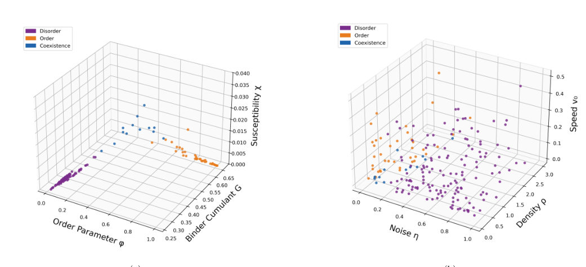
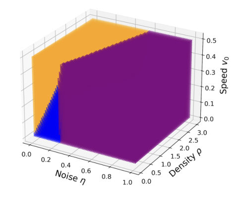
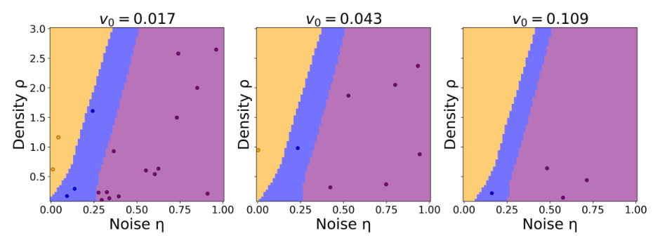
Summary. This paper presents a machine learning framework to automatically map the complex phase diagram of the Vicsek model. By combining K-Means clustering with neural networks, the authors can identify coexistence regions and interpolate phase boundaries in a 3D parameter space. This provides a systematic way to extract global phase behavior from sparse simulation data in active matter models.
Why it may be interesting. not directly relevant
Main problem. Mapping and classifying the 3D phase structure (order, disorder, and coexistence) of the Vicsek model across a parameter space of noise, density, and velocity.
Main result. The authors developed an ML pipeline that achieves 0.92 classification accuracy, successfully resolving a narrow coexistence region and interpolating phase boundaries beyond the original simulation points.
Method. A two-step machine learning approach using K-Means clustering on dynamical observables for unsupervised phase labeling, followed by a supervised neural network classifier for parameter-to-phase mapping.
Model / system. The Vicsek model, an agent-based model of self-propelled particles in 2D that exhibits collective motion/flocking behavior.
Key observables. Order parameter (phi), Binder cumulant (G), and susceptibility (chi).
Important parameters / regimes. Noise level (eta), particle density (rho), and self-propulsion velocity (v0).
Assumptions / limitations. The study assumes that the K-Means clustering of steady-state observables accurately represents the underlying physical phases and that weighted cross-entropy is sufficient to handle class imbalance.
Figures summary. Figure 1 shows K-Means clustering in observable space and the resulting phase labels projected onto parameter space; Figure 2 provides a 3D visualization of the learned phase diagram; Figure 3 shows 2D slices of the phase diagram in the (eta, rho) plane at different v0 values.
Paper structure. The paper introduces the Vicsek model and the problem of phase mapping, describes the simulation and ML pipeline (unsupervised clustering followed by supervised classification), presents the resulting 3D phase diagrams and 2D slices, and concludes with discussion on limitations and future work.
In this study, we use machine learning to classify and interpolate the phase structure of the Vicsek flocking model across the three-dimensional parameter space $(η,ρ,v_0)$. We construct a dataset of simulated parameter points and characterize each point using long-time dynamical observables. These observables are then used as inputs to a K-Means clustering procedure, which assigns each point to a disorder, order, or coexistence phase. Using these clustered labels, we train a neural-network classifier to learn the mapping from model parameters to phase behavior, achieving a classification accuracy of 0.92. The resulting phase map resolves a narrow coexistence region separating the ordered and disordered phases and extends the inferred phase boundaries beyond the originally sampled simulation points. More broadly, this approach provides a systematic way to convert sparse simulation data into a global phase diagram for collective-motion models.
Authors: Sobhan Subhra Mishra, Thomas CaiWei Tan, Faxian Xiu, Ranjan Singh
Type: experiment · Category: other · PDF: https://arxiv.org/pdf/2604.27294v1
Analysis basis: full PDF text, analyzed in chunks
Topic relevance: non-equilibrium dynamics 2/5 · quantum optics experiment 2/5
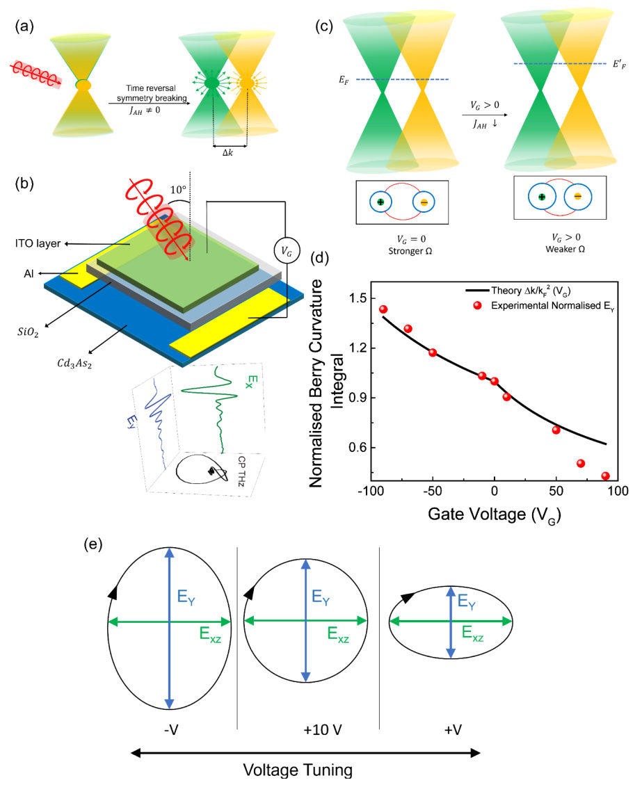
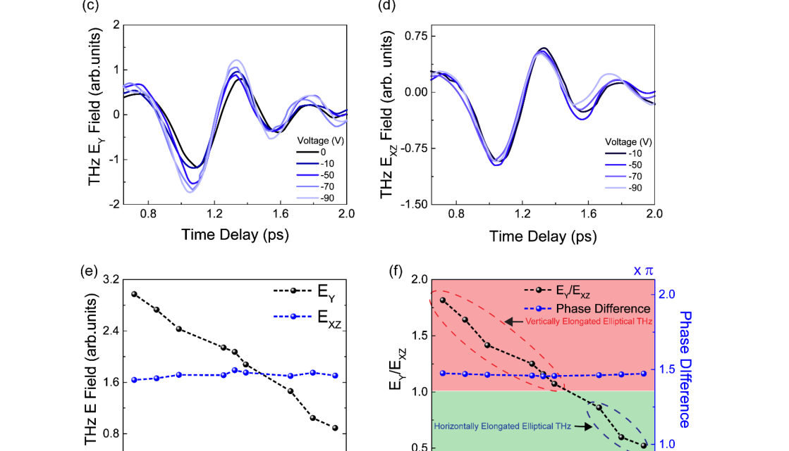
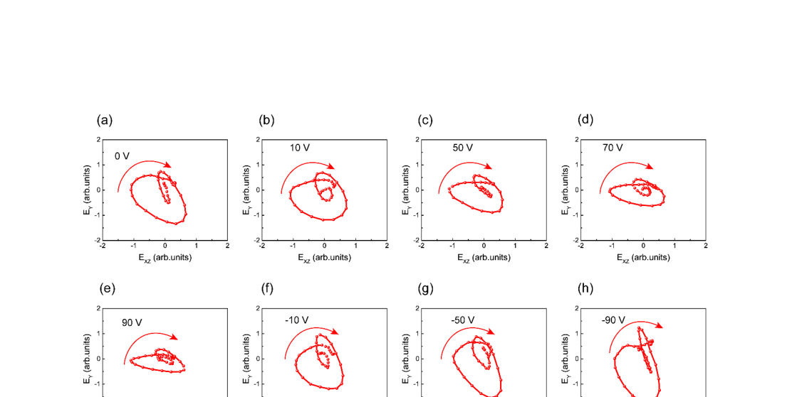
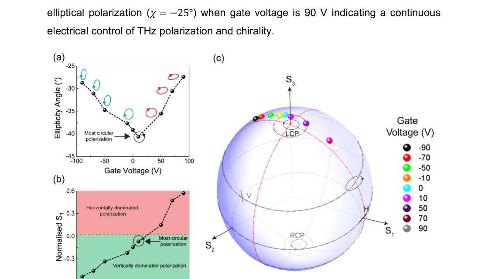
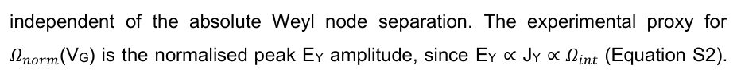
Summary. The researchers demonstrated how to electrically tune the polarization of terahertz light by using a gate voltage to reshape the Fermi surface in a Dirac semimetal. By selectively modulating the Berry curvature-driven component of the emission, they achieved programmable control of THz chirality. This provides a new route for creating on-chip, electrically controllable chiral light sources.
Why it may be interesting. not directly relevant
Main problem. Achieving all-electrical, deterministic control over the chirality (polarization state) of Terahertz (THz) emission by manipulating quantum geometry.
Main result. Demonstrated that electrostatic gating of Cd3As2 can reshape Fermi pockets to selectively modulate the Berry curvature-driven THz component, enabling programmable tuning of THz polarization across the Poincaré sphere.
Method. THz emission spectroscopy using circularly polarized femtosecond laser pulses on a gated Cd3As2 thin-film device, combined with Stokes parameter analysis.
Model / system. A 40 nm thin film of the 3D Dirac semimetal Cd3As2 in a field-effect transistor geometry, subject to Floquet Weyl physics via optical excitation.
Key observables. THz electric field components (Ex and Ey), ellipticity angle (chi), azimuth angle (psi), and Stokes parameters (S1, S2, S3).
Important parameters / regimes. Gate voltage (Vg) from -90 V to +90 V, Fermi energy (Ef) shifts, and Berry curvature integral.
Assumptions / limitations. Assumes a monopole-like divergence for Berry curvature near Weyl nodes and uses an asymmetric screening model for carrier accumulation/depletion.
Figures summary. Fig 1: Schematic of Floquet band engineering and device architecture; Fig 2: Evidence of selective gate-dependent tuning of THz components; Fig 3: Evolution of polarization ellipses across voltages; Fig 4: Quantitative mapping of Stokes parameters and ellipticity vs. voltage.
Paper structure. The paper introduces the problem of controlling optical observables via quantum geometry, describes the Floquet-Weyl mechanism in Cd3As2, presents experimental evidence of gate-tunable THz chirality, provides quantitative verification via Berry curvature integration, and concludes with potential applications for programmable THz sources.
Quantum geometry encoded in the momentum space structure of electronic wavefunctions, governs charge dynamics through Berry curvature, enabling unconventional transport and optical responses. In topological semimetals, this geometry is sampled over Fermi pockets, suggesting electrical control by Fermi surface tuning, yet such control has remained largely limited to DC transport. Here we show that electrostatic gating of the 3D Dirac semimetal Cd3As2 reshapes Fermi pockets surrounding photoinduced Floquet Weyl nodes, enabling electrical control of terahertz (THz) emission chirality. Gate tuning selectively modulates the Berry curvature driven linearly polarized THz component by up to 60% and 49% at positive and negative bias, respectively, while the orthogonal linearly polarized photon-drag component remains unchanged. With the two orthogonal fields intrinsically phase-locked at \sfracπ{2} by the excitation geometry, the selective gate-tuned amplitude control enables the polarization tuning across the Poincaré sphere, achieving near-circular polarization (χ\approx-42°) at +10 V. These results establish Fermi surface tuning as a general route to programmable quantum geometric control of chiral terahertz emission.
Authors: Seno Aji
Type: theory · Category: other · PDF: https://arxiv.org/pdf/2604.27719v1
Analysis basis: abstract only; PDF text extraction failed or PDF unavailable
Topic relevance: non-equilibrium dynamics 2/5 · spintronics-quantum-optics interface 2/5
Summary. This paper provides a theoretical framework to understand how lattice vibrations (phonons) can drive electric fields in skyrmion lattices. It shows that internal skyrmion dynamics like breathing and rotation can generate measurable electrical signals even without moving the entire lattice. This is significant for developing new ways to control and detect topological magnetic textures using light or microwaves.
Why it may be interesting. not directly relevant
Main problem. The paper aims to describe the generation of macroscopic emergent electric fields resulting from the coupling between phonons and the breathing/rotational dynamics of a skyrmion lattice under microwave excitation.
Main result. The study identifies the specific symmetry and dynamical conditions required to produce both rectified (dc) and oscillating (ac) electric fields, even without net translational motion of the lattice.
Method. The authors develop a coarse-grained theoretical description and a unified framework for analyzing spin-charge-lattice coupling in the long-wavelength phonon limit.
Model / system. The system consists of a skyrmion lattice in topological magnets subject to phonon-coupled lattice deformations and microwave excitation.
Key observables. Macroscopic emergent electric fields (dc and ac components), skyrmion profile parameters, and harmonic components of the electrodynamic response.
Important parameters / regimes. Equilibrium radius, domain-wall width, dynamical resonance frequency, long-wavelength phonon limit (q -> 0), and finite phonon frequency.
Assumptions / limitations. The analysis focuses on the dilute-lattice limit and the long-wavelength phonon limit.
Paper structure. The paper presents a theoretical development of a coarse-grained model, followed by an analysis of symmetry and dynamical conditions for electric field generation, and concludes with the identification of harmonic components in the electrodynamic response.
We develop a coarse-grained theoretical description of the macroscopic emergent electric field generated by phonon-coupled lattice deformations in the breathing and rotational dynamics of a skyrmion lattice under microwave excitation. The analysis identifies the symmetry and dynamical conditions that yield rectified (dc) and oscillating (ac) electric fields, even in the absence of net translational motion of the skyrmion lattice, particularly in the dilute-lattice limit. Using experimentally measurable skyrmion profile parameters such as the equilibrium radius, domain-wall width, and dynamical resonance frequency of skyrmion lattice, the model further enables identification of harmonic components contributing to the observed macroscopic electrodynamic response in the long-wavelength phonon limit ($q \to 0$) and at finite phonon frequency, providing a unified framework for phonon-driven spin-charge-lattice coupling in topological magnets.
Authors: Ya. V. Turkin, N. G. Pugach, F. M. Maksimov, A. S. Pakhomov, A. I. Chernov, V. I. Belotelov, S. N. Polulyakh, V. S. Stolyarov
Type: both · Category: other · PDF: https://arxiv.org/pdf/2604.27076v1
Analysis basis: abstract only; PDF text extraction failed or PDF unavailable
Topic relevance: Keldysh / 2PI / non-Gaussian methods 2/5 · spintronics-quantum-optics interface 2/5
Summary. The researchers show that a superconductor can act as a control knob to convert uniform magnetic resonance into standing spin waves in an adjacent insulator. This process is driven by spin-transfer torque from triplet Cooper pairs and electromagnetic effects from superconducting vortices. This discovery opens new ways to manipulate magnonic modes using superconducting states.
Why it may be interesting. not directly relevant
Main problem. Exploring the coherent coupling between a diffusive superconductor and short-wavelength magnons in an adjacent insulating magnet to enable mode conversion.
Main result. Demonstrated that superconductivity can convert uniform ferromagnetic resonance (FMR) into perpendicular standing spin waves (PSSWs) via spin-polarized triplet Cooper pairs and electromagnetic proximity from Abrikceptov vortices.
Method. Experimental microwave transmission measurements on bilayers combined with a microscopic theory coupling the Keldysh-Usadel description of superconductivity to Landau-Lifshitz-Gilbert dynamics.
Model / system. Bi-substituted iron-garnet/Nb bilayers consisting of a ferrimagnetic insulator adjacent to a conventional diffusive superconductor.
Key observables. Microwave transmission resonance features and magnetic susceptibility lineshapes.
Important parameters / regimes. Nb transition temperature, spin-polarized triplet Cooper pair-mediated torque, and Abrikosov vortex-induced effective field.
Assumptions / limitations. The superconductor is treated as a conventional diffusive system described by the Keldysh-Usadel formalism.
Paper structure. The paper presents an experimental demonstration of FMR to PSSW conversion in bilayers, followed by a microscopic theoretical derivation using Keldysh-Usadel and LLG dynamics to explain the mechanism.
Superconductors can transport spin without Joule dissipation, yet their coherent coupling to short-wavelength magnons in insulating magnets remains largely unexplored. Here we demonstrate experimentally and theoretically that a conventional diffusive superconductor can enable the conversion of the uniform ferromagnetic-resonance (FMR) mode into perpendicular standing spin waves (PSSWs) in an adjacent ferrimagnetic insulator. In Bi-substituted iron-garnet/Nb bilayers, the microwave transmission develops an additional resonance feature that appears only below the Nb transition temperature and lies close to the uniform FMR peak. A microscopic theory that self-consistently couples the quasiclassical Keldysh--Usadel description of the superconducting condensate to the Landau--Lifshitz--Gilbert dynamics shows that the conversion requires two ingredients: (i) an interfacial spin-transfer torque mediated by spin-polarized triplet Cooper pairs and (ii) a depth-dependent effective field produced by Abrikosov vortices (electromagnetic proximity). The resulting susceptibility reproduces the measured lineshapes and establishes superconductivity as an active control knob for exchange standing-wave modes in magnetic insulators.
Authors: Xian-Peng Zhang, Yan-Qing Feng, Wanxiang Feng, Yugui Yao
Type: theory · Category: disordered systems and neural networks · PDF: https://arxiv.org/pdf/2604.27946v1
Analysis basis: abstract only; PDF text extraction failed or PDF unavailable
Topic relevance: Kondo & dissipative impurity 2/5 · non-equilibrium dynamics 2/5
Summary. This paper develops a theory to explain how quantum decoherence affects the spin Hall effect in large-scale topological insulators. It reveals a new, stronger mechanism for the extrinsic spin Hall effect and predicts a specific scaling law that can be used to experimentally detect decoherence effects. This work highlights the importance of decoherence in the development of future spintronic technologies.
Why it may be interesting. It provides a new perspective on how environmental coupling (decoherence) fundamentally alters transport properties and introduces a new mechanism for the spin Hall effect through second-order scattering.
Main problem. Understanding the microscopic mechanisms of quantum decoherence and its impact on the quantum spin Hall effect in macroscopic, infinite-size topological insulators.
Main result. The authors identify a new second-order skew-scattering mechanism for the extrinsic spin Hall effect tied to decoherence and predict a new scaling law where spin Hall conductivity scales quadratically with longitudinal conductivity.
Method. Development of a comprehensive theoretical framework to quantitatively investigate decoherence-induced corrections in topological transport.
Model / system. Macroscopic topological insulators subject to interactions with an environment and impurity-induced scattering.
Key observables. Quantum spin Hall conductivity, longitudinal conductivity, and impurity density scaling.
Important parameters / regimes. Impurity density and the relationship between spin Hall and longitudinal conductivity.
Assumptions / limitations. The theory focuses on the regime of macroscopic, infinite-size topological insulators.
Paper structure. The paper introduces the problem of decoherence in topological insulators, develops a theory for decoherence-induced corrections, identifies a new skew-scattering mechanism, and concludes with a predicted experimental scaling law.
Quantum decoherence-the loss of quantum coherence due to interactions with an environment-plays a central role in quantum transport, and controlling this ubiquitous yet inevitable phenomenon is essential for practical quantum technologies. Despite its importance, the microscopic mechanisms of decoherence in infinite-size topological insulators remain poorly understood. Here, we develop a comprehensive theory that quantitatively investigates how quantum decoherence shapes the quantum spin Hall effect in macroscopic topological insulators, and reveal that decoherence-induced corrections scale quadratically with impurity density. Besides, we uncover a previously unidentified mechanism of the extrinsic spin Hall effect: a second-order skew-scattering process intrinsically tied to quantum decoherence-fundamentally distinct from, yet substantially stronger than, the conventional third-order skew-scattering mechanism. Furthermore, we predict a new scaling law in which the decoherence-induced spin Hall conductivity scales quadratically with the longitudinal conductivity, providing a clear experimental signature of decoherence effects. Our results establish the essential role of decoherence in quantum transport of topological insulators and reveal that macroscopic topological insulators offer a promising platform for next-generation spintronic applications.
Authors: Dmitry A. Egorov, Dmitriy A. Pokhabov, Evgeny Yu. Zhdanov, Andrey A. Shevyrin, Askhat K. Bakarov, Arthur G. Pogosov
Type: both · Category: other · PDF: https://arxiv.org/pdf/2604.27860v1
Analysis basis: full PDF text, analyzed in chunks
Topic relevance: non-equilibrium dynamics 2/5 · non-equilibrium universality 2/5



Summary. This paper reports the experimental detection of steady-state electron whirlpools in a GaAs-based 2D electron liquid using transport measurements. By showing that the appearance of negative resistance scales with the Gurzhi length, the authors provide strong evidence for hydrodynamic flow and probe the limits of the hydrodynamic analogy.
Why it may be interesting. not directly relevant
Main problem. The difficulty of directly observing and characterizing hydrodynamic vortices (electron whirlpools) in electron liquids and distinguishing them from ballistic transport.
Main result. The authors demonstrate the formation of large-scale steady-state whirlpools in a GaAs electron liquid, showing that the transition to negative resistance scales universally with the Gurzhi length (D/D_nu approx 8.0).
Method. The study combines four-terminal transport measurements in GaAs/AlGaAs heterostructures with numerical hydrodynamic simulations and scaling analysis.
Model / system. A high-mobility two-dimensional electron gas (2DEG) in a GaAs/AlGaAs heterostructure, featuring a device geometry with circular cavities adjoining a wide conducting channel.
Key observables. Four-terminal resistance (R), potential difference (V), and current streamlines.
Important parameters / regimes. Gurzhi length (D_nu), cavity diameter (D), temperature (T), electron density (n), and mobility (mu).
Assumptions / limitations. The hydrodynamic model assumes a slip boundary condition consistent with previously reported perfect slip flow in GaAs.
Figures summary. Fig 1 shows device schematics and simulated current/potential maps; Fig 2 shows potential difference; Fig 3 shows the scaling of Gurzhi length with cavity diameter; Fig 4 shows resistance in a reference geometry without vortices.
Paper structure. The paper introduces the problem of vortex detection, describes the GaAs experimental platform and device geometry, presents transport measurements and scaling analysis, compares results to numerical simulations, and concludes with a discussion on the breakdown of standard viscosity relations.
We report the formation of large-scale steady-state whirlpools in a GaAs-based two-dimensional electron liquid and demonstrate them by straightforward transport measurements. A whirlpool forming inside a circular cavity adjoining a wide conducting channel appears as a negative four-terminal resistance over a broad range of temperatures and cavity sizes. The effect scales with the Gurzhi length, in quantitative accord with the hydrodynamic analogy. Obtained results firmly establish this analogy and probe the limits of its applicability.
Authors: Hirofumi Wada, Hayato Mizobata, Shuto Ueno, Taiju Yoneda
Type: both · Category: other · PDF: https://arxiv.org/pdf/2604.27554v1
Analysis basis: abstract only; PDF text extraction failed or PDF unavailable
Topic relevance: Frenkel-Kontorova 2/5 · non-equilibrium dynamics 1/5
Summary. This paper investigates the mechanics of the 'Jacob's ladder' toy, identifying its flipping waves as topological solitons. It reveals that unlike standard topological chains, the toy's flexibility allows for the coexistence of kink and antikink waves. The study uses a combination of experiment and theory to show how symmetry and gravity drive these unique motions.
Why it may be interesting. not directly relevant
Main problem. The study aims to uncover the physical origin and design principles behind the unidirectional flipping waves in the 'Jacob's ladder' mechanical toy.
Main result. The researchers demonstrate that the toy's waves are a class of topological solitons arising from bistability under gravity, and that its symmetric connection creates a topologically singular state allowing for kink-antikink coexistence.
Method. The study combines water-tank experiments, numerical simulations, and analytical theory including the use of the index theorem.
Model / system. A mechanical frame known as 'Jacob's ladder' consisting of rigid blocks connected by strings, analyzed under the influence of gravity and pretension.
Key observables. Unidirectional flipping waves, kink and antikink waves, and the pair annihilation of kink-antikink waves.
Important parameters / regimes. Gravity, pretension, and the symmetry/asymmetry of the connections.
Assumptions / limitations. The study assumes the toy's behavior can be modeled by comparing it to the Kane-Lubensky topological chain and analyzing its bistability.
Paper structure. The paper begins with experimental verification in a water tank to rule out domino effects, followed by analytical demonstration of bistability and topological soliton properties, a comparison with the Kane-Lubensky chain, an application of the index theorem to identify differences, and finally an analysis of asymmetric toy configurations and wave annihilation.
{\it Jacob's ladder} -- a classic children's toy -- is a simple mechanical frame comprising rigid blocks connected by strings that shows curious unidirectional flipping waves. Nonetheless, its physical origin remains elusive. By combining experiment, numeral simulation, and theory, we show that understanding the underlying design principle of this toy requires diverse physical ideas. First, we conduct a water-tank experiment that excludes the domino-like mechanism, thus defying widespread expectations. Subsequently, we analytically demonstrate that the toy is bistable under gravity, thus implying its kink wave as a class of topological solitons. The waves are surprisingly reminiscent -- both experimentally and theoretically -- to those in the Kane--Lubensky topological chain, owing to the stiffening of zero modes by the pretension under gravity. However, a close examination based on the index theorem reveals that the similarity remains superficial and that the floppiness of the toy underlies the kink and antikink coexistence -- a forbidden mode in the topological chain. By analyzing a generalized asymmetric toy, we reveal that its symmetric connection renders it topologically singular, thus resulting in amusing motions. We demonstrate these ideas by experimentally observing a dramatic pair annihilation of kink and antikink waves.
Authors: Thierry Valet, Nicolas Vukadinovic
Type: theory · Category: numerical methods · PDF: https://arxiv.org/pdf/2604.28008v1
Analysis basis: full PDF text, analyzed in chunks
Topic relevance: methods for driven-dissipative 2/5
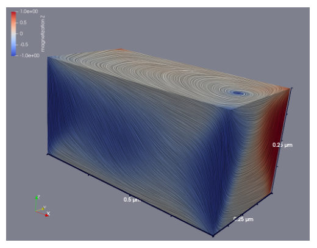
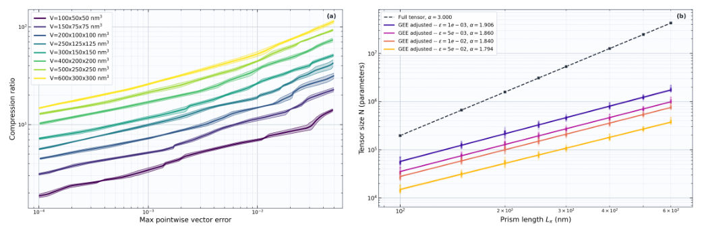
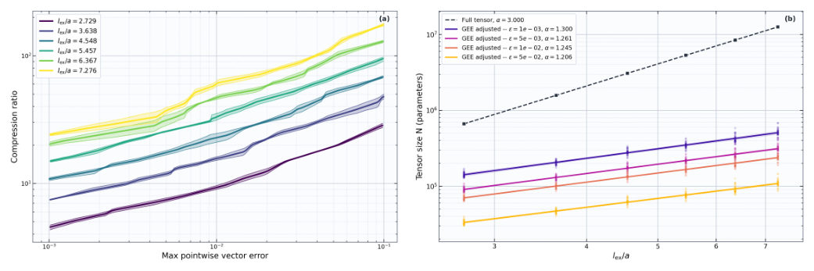
Summary. This paper demonstrates that using Tensor Train compression for micromagnetic simulations can bypass the cubic scaling bottleneck of traditional 3D methods. By exploiting the spatial sparsity of domain walls and edges, the computational complexity scales much more favorably with both system size and grid resolution. This provides a foundation for developing highly efficient, tensor-network-based micromagnetic solvers.
Why it may be interesting. not directly relevant
Main problem. Standard 3D micromagnetic simulations suffer from severe computational bottlenecks due to cubic scaling with object size and grid refinement, failing to exploit the inherent spatial sparsity of magnetic structures.
Main result. Tensor Train (TT) representations successfully exploit informational sparsity, achieving sub-cubic scaling of approximately L^1.8 and (1/a)^1.2, which significantly outperforms traditional dense discretization.
Method. The authors use Tensor Cross-Interpolation (TCI) via the tntorch package to compress magnetization data obtained from GPU-accelerated MuMax3 simulations.
Model / system. The study focuses on 3D equilibrium flux-closure states in soft-magnetic rectangular prisms with a 2:1:1 aspect ratio, characterized by localized domain walls and vortices.
Key observables. Compressed Parameter Count (CPC), Compression Ratio (CR), and Maximal Pointwise Vector Error (MPVE).
Important parameters / regimes. Exchange length (approx. 5.69 nm), saturation magnetization (8.0 x 10^5 A/m), and exchange stiffness (1.3 x 10^-11 J/m).
Assumptions / limitations. The analysis assumes the magnetic state can be effectively captured by the Tensor Train format due to the presence of low-dimensional high-gradient regions.
Figures summary. Figure 1 shows a 3D flux-closure state; Figure 2 plots compression ratio and parameter count scaling against prism size; Figure 3 shows compression ratio and parameter count scaling against grid refinement.
Paper structure. The paper introduces the scaling bottleneck of micromagnetics, presents the Tensor Train compression approach, demonstrates scaling advantages through variable-size and variable-refinement simulation series, and concludes with implications for future TT-based solvers.
For three-dimensional (3D) magnetic objects with linear size $L$ exceeding a few exchange lengths, the micromagnetic state exhibits pronounced informational sparsity: low-dimensional, high-gradient regions (e.g., domain walls) coexist with near-uniformly magnetized volumetric domains. Because standard micromagnetic simulation methods discretize the magnetization on near-uniform 3D grids with linear cell size $a$, they cannot take advantage of this sparsity. The computational problem scales as $\sim L^3$ and $\sim (1/a)^3$. In this Letter, we establish that direct tensor-train (TT) representations overcome these poor scalings by exploiting the spatial sparsity optimally, while preserving accuracy in a controlled way. Focusing on representative flux-closure configurations in soft-magnetic rectangular prisms, in the near-micrometer regime, we demonstrate that the parameter count of TT-compressed micromagnetic data scales approximately as $L^{1.8}$ and $(1/a)^{1.2}$. Hence the relative advantage over dense discretizations rapidly grows with the problem size and refinement level. These first results provide a strong motivation for future developments of micromagnetic solvers in TT format which could transcend the limitations of traditional simulators, with far reaching potential impacts on fundamental research and technology development.
Authors: Runfeng Zhou, Emilio Artacho
Type: theory · Category: other · PDF: https://arxiv.org/pdf/2604.27236v1
Analysis basis: abstract only; PDF text extraction failed or PDF unavailable
Topic relevance: non-equilibrium dynamics 2/5
Summary. This paper investigates how core electrons influence the energy loss of ions passing through matter. It discovers that core electrons both add a new way for energy to dissipate and reduce the excitation of valence electrons through electron capture. This finding challenges standard semi-empirical models and provides a new perspective on ion-matter interactions.
Why it may be interesting. not directly relevant
Main problem. Understanding the role of core electrons in non-equilibrium energy dissipation and electronic stopping power during swift-ion irradiation.
Main result. The study identifies a dual role for core electrons: they provide an additional dissipation channel through excitation while simultaneously suppressing valence electron excitations via an electron capture process.
Method. First-principles calculations using real-time time-dependent density functional theory (rt-TDDFT) with explicit treatment of all electrons.
Model / system. Beryllium self-irradiation, treated as a multi-shell swift-ion/matter system.
Key observables. Electronic stopping power (Se) and the structure of the Bragg peak.
Assumptions / limitations. The study assumes the validity of real-time TDDFT for describing the electron dynamics during the ion-matter interaction.
Paper structure. The paper presents a problem statement regarding energy dissipation, describes the TDDFT methodology, presents results regarding the Bragg peak structure, discusses the dual mechanism of core electrons, and compares findings to existing models like the shake-up effect in water.
Non-equilibrium energy dissipation in multi-shell swift-ion/matter systems remains a fundamental yet incompletely understood problem, with electronic stopping power $\mathcal{S}_\text{e}$ as a relevant observable for electronic friction. Using real-time time-dependent density functional theory, we perform first-principles calculations of $\mathcal{S}_\text{e}$ for beryllium self-irradiation with explicit treatment of all electrons. Our results reveal a Bragg peak exhibiting a distinct structure which lies beyond the reach of standard semi-empirical models. We attribute its appearance to a dual effect of the presence of core electrons, by which their excitation provides an additional dissipation channel while simultaneously suppressing valence electron excitations. An electron capture process by the projectile's core from the host cores is behind such suppression, rather than Pauli blocking. This dual mechanism contrasts with the shake-up effect reported for water, whereby the inclusion of core electrons enhances valence excitation. Our work provides a new perspective on the effect and importance of core electrons in projectile energy dissipation in matter.
Authors: Shiva Kant Tiwari, Tijs Karman, Valentin Walther
Type: theory · Category: other · PDF: https://arxiv.org/pdf/2604.27331v1
Analysis basis: abstract only; PDF text extraction failed or PDF unavailable
Topic relevance: Kondo & dissipative impurity 2/5
Summary. This paper develops a multichannel theory to explain how Rydberg excitons can be used to purify crystals by neutralizing charged impurities. It identifies that while high-energy collisions can hinder purification through elastic and inelastic scattering, an ultralow-energy quantum regime exists that optimizes the purification process. This regime can be experimentally accessed using degenerate two-photon excitation.
Why it may be interesting. It provides a theoretical framework for controlling impurity-exciton interactions using tunable recoil, offering a platform to study exciton-impurity scattering physics that extends beyond the capabilities of traditional atomic gas experiments.
Main problem. The study aims to understand the efficiency of crystal purification via Rydberg excitons by resolving the competing roles of capture, elastic scattering, and inelastic transitions during exciton-impurity collisions.
Main result. The authors identify a quantum regime at ultralow collision energies where s-wave scattering enhances capture while suppressing inelastic and elastic channels, thereby maximizing purification efficiency.
Method. The authors develop a multichannel theory of Rydberg exciton-impurity scattering to analyze different collision energy regimes.
Model / system. The physical system consists of Rydberg excitons in cuprous oxide (Cu2O) interacting with charged impurities in a crystal lattice.
Key observables. Capture rate, elastic scattering cross-section, inelastic transition rates, and purification efficiency.
Important parameters / regimes. Collision energy, s-wave contribution, and the distinction between single-photon and two-photon excitation regimes.
Paper structure. The paper presents a multichannel theory, compares high-energy vs. low-energy collision regimes, and proposes a method for accessing the optimal purification regime via two-photon excitation.
Recent experiments show that optically generated Rydberg excitons in cuprous oxide can neutralize charged impurities, strongly reducing stray electric fields and effectively purifying the crystal. Here, we develop a multichannel theory of Rydberg exciton-impurity scattering that resolves the competing roles of capture, elastic scattering, and inelastic transitions between excitonic states. We find that at high collision energies, as effective under conventional single-photon excitation, purification is reduced relative to Langevin capture. These collisions are accompanied by inelastic redistribution and dominant elastic scattering, including pronounced glory scattering, which suppress purification efficiency. We identify a quantum regime at ultralow collision energies favorable for purification, where only the s-wave contributes: capture is enhanced while elastic and inelastic channels are strongly suppressed. This regime can be accessed via degenerate two-photon excitation of even-parity Rydberg excitons with tunable recoil, additionally enabling the systematic exploration of exciton-impurity scattering over a wide range of collision energies beyond what is readily achievable in atomic counterparts in atomic gas experiments.
Authors: Petr Sedlák, Tomáš Grabec, Hanuš Seiner
Type: theory · Category: other · PDF: https://arxiv.org/pdf/2604.27729v1
Analysis basis: full PDF text, analyzed in chunks
Topic relevance: Frenkel-Kontorova 2/5
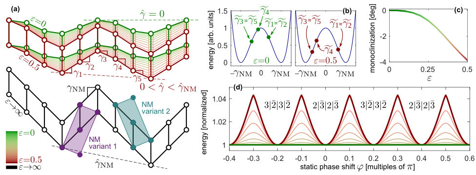
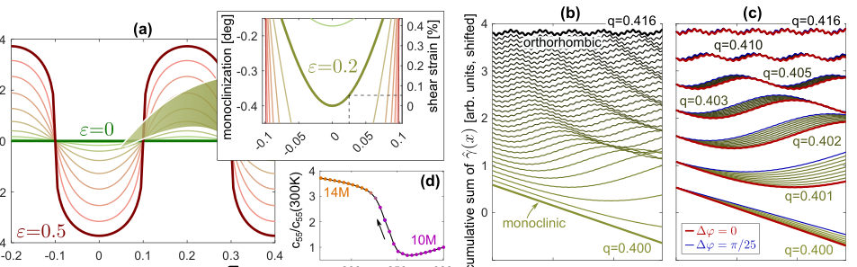
Summary. This paper proposes that the extreme elastic softness observed in Ni-Mn-Ga shape memory alloys is caused by mechanical phasons—dynamic shifts in the modulation phase. The model explains how these phasons relax macroscopic shear loads in commensurate structures but fail to do so in incommensurate ones, reconciling theory with experiment.
Why it may be interesting. not directly relevant
Main problem. Resolving the discrepancy between experimental observations of extreme elastic softening in 10M Ni-Mn-Ga martensite and the much stiffer lattice predicted by first-principles calculations.
Main result. The authors propose that 'mechanical phasons' (collective phase shifts in the modulation wave) can relax external shear loads in commensurate and weakly incommensurate regimes, explaining the observed macroscopic compliance.
Method. A mechanical model that merges adaptive martensite theory with electronic-structure considerations, using energy minimization of a perturbed modulation function.
Model / system. The system is the 10M modulated martensite in Ni-Mn-Ga ferromagnetic shape memory alloys. The model treats the modulation as a periodic atomic displacement that can undergo phase shifts (phasons) within a Landau-type energy landscape.
Key observables. Shear modulus (c55), macroscopic monoclinic distortion (gamma), modulation vector (q), and twinning stress.
Important parameters / regimes. Modulation wave vector (q), weighting factor (epsilon) controlling the transition from sine-wave to zig-zag modulation, and phason amplitude (delta phi).
Assumptions / limitations. The lattice consists of rigid planes that can shift along the modulation amplitude; the modulation is initially assumed to be a simple sine wave.
Figures summary. Figure 1 shows phonon branches and the modulation notation; Figure 2 illustrates the energy-minimizing lattice and energy landscape for different epsilon values; Figure 3 shows the cumulative sum of monoclinic distortion and the effect of phase shifts.
Paper structure. The paper introduces the experimental discrepancy, presents a mechanical model of phasons, develops the energy minimization framework for the modulated lattice, analyzes the transition from commensurate to incommensurate regimes, and concludes by linking the model to observed elastic properties.
We discuss modulation phasons as a possible source of unusual elastic behavior of five-layer modulated (10\,M) martensite of the Ni-Mn-Ga shape memory alloy. This material exhibits anomalous macroscopic shear compliance along specific planes perpendicular to the modulation vector, and this compliance disappears when the modulations become incommensurate. Using a simple mechanical model, we show that modulation phasons in Ni-Mn-Ga can have macroscopic mechanical manifestations, and that the resulting 'mechanical phasons' can relax external shear loadings for commensurate and weakly incommensurate modulations, but not for strongly incommensurate modulations. The model merges ideas from the adaptive martensite theory and electronic-structure considerations, and enables straightforward explanations of several properties of the 10\,M lattice, such as spontaneous monoclinic distortion or easy formation and propagation of $a/b$ twins.
Authors: Keidai Akiba, Naoki Yamamoto
Type: theory · Category: other · PDF: https://arxiv.org/pdf/2604.27751v1
Analysis basis: full PDF text, analyzed in chunks
Topic relevance: Keldysh / 2PI / non-Gaussian methods 2/5
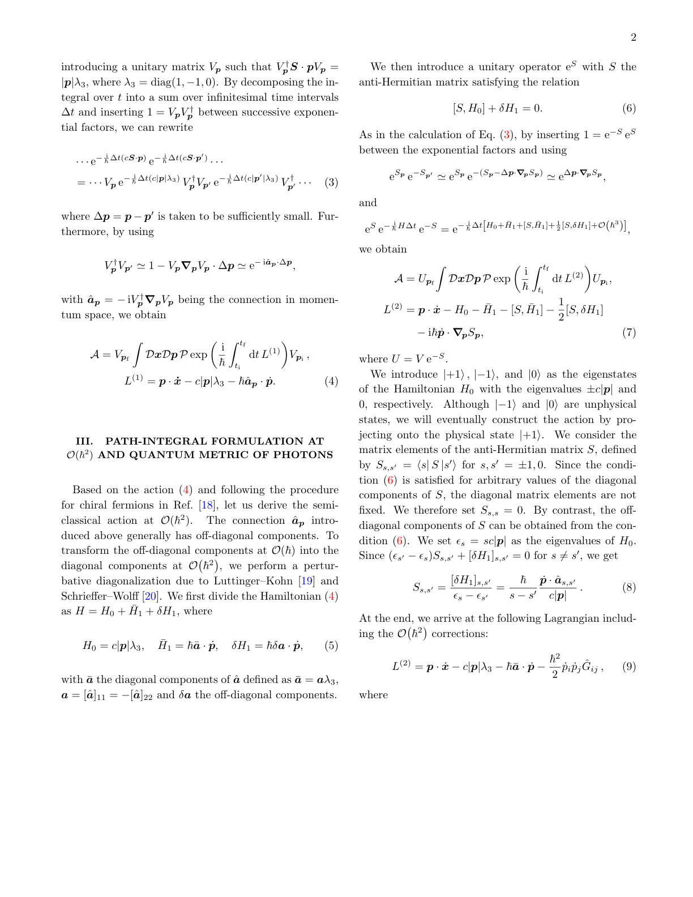
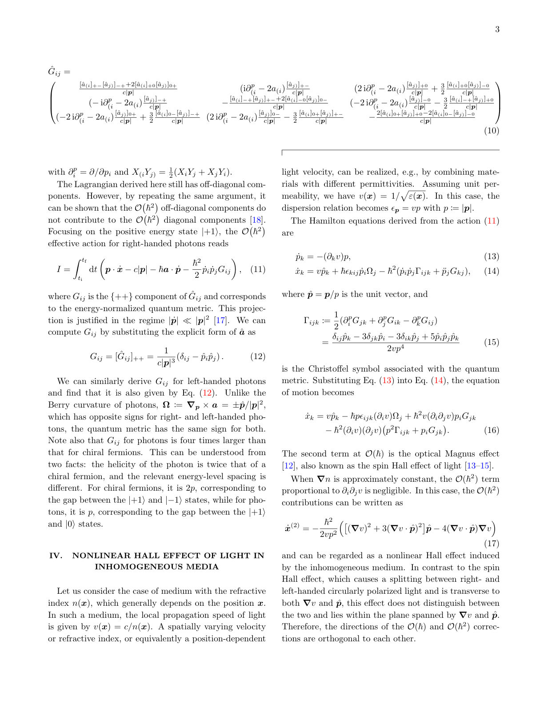
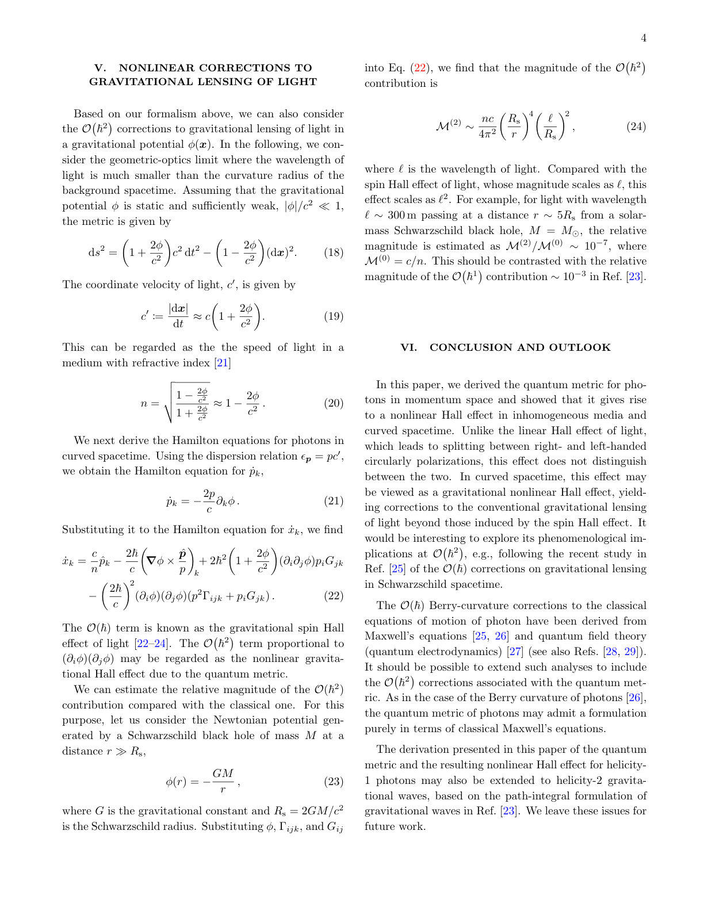
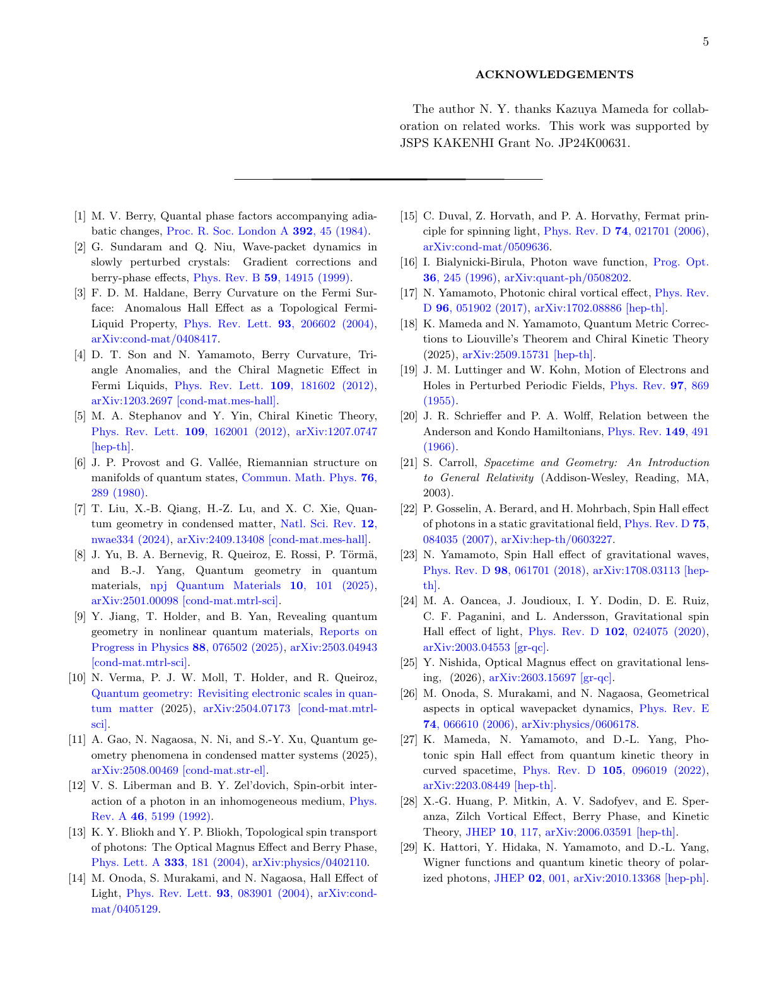
Summary. The paper shows that photons possess a nontrivial quantum metric in momentum space. This metric leads to a nonlinear Hall effect in media with varying refractive indices and introduces $O(\hbar^2)$ corrections to gravitational lensing in curved spacetime. These effects represent a higher-order geometric correction to light propagation that does not depend on photon helicity.
Why it may be interesting. This paper is interesting for quantum optics researchers as it identifies a new class of nonlinear geometric effects (the nonlinear Hall effect of light) that arises from the momentum-space geometry of photons, extending beyond the well-known spin Hall effect.
Main problem. The paper investigates whether photons possess a nontrivial quantum metric in momentum space and explores the resulting nonlinear transport phenomena, such as a nonlinear Hall effect in inhomogeneous media and gravitational lensing corrections in curved spacetime.
Main result. The authors demonstrate that photons have a nontrivial quantum metric that induces a trajectory shift at second order in the derivatives of the refractive index (nonlinear Hall effect of light) and provides $O(\hbar^2)$ corrections to gravitational lensing.
Method. The study employs the path-integral formalism and perturbative diagonalization methods (Luttinger-Kohn and Schrieffer-Wolff) to derive the semiclassical action and equations of motion.
Model / system. The system consists of photons in either inhomogeneous media with a varying refractive index $n(x)$ or in a static, weak background gravitational field, modeled using a spin-1 Hamiltonian $H = \pm c \mathbf{S} \cdot \mathbf{p}$.
Key observables. Quantum metric ($G_{ij}$), Berry curvature ($\Omega$), photon trajectory shifts, and gravitational lensing corrections.
Important parameters / regimes. Semiclassical limit, geometric-optics limit, weak gravitational field limit ($|\phi|/c^2 \ll 1$), and the scaling of effects by powers of $\hbar$ (specifically $O(\hbar)$ spin Hall effect vs $O(\hbar^2)$ nonlinear Hall effect).
Assumptions / limitations. Static and weak gravitational fields, linear wave equation requirements, and the geometric-optics limit where the wavelength is much smaller than the spacetime curvature radius.
Paper structure. The paper begins with a path-integral derivation of the photon's semiclassical action, moves to the derivation of the quantum metric and Berry curvature, then applies these to light in inhomogeneous media, and concludes with the application to gravitational lensing in curved spacetime.
Using the path-integral formalism, we show that photons possess a nontrivial quantum metric in momentum space. We derive the semiclassical action and equations of motion by taking into account the quantum metric. In media with a spatially varying refractive index $n(\mathbf{x})$, the quantum metric induces a shift in the trajectory of light at second order in derivatives of $n$, which may be regarded as a nonlinear Hall effect of light. The quantum metric also gives rise to corrections to gravitational lensing in curved spacetime at the nonlinear order in wavelength. This gravitational nonlinear Hall effect results from the interplay between the geometry of position space and that of momentum space.
Authors: Yinan Wang, Poyen Chen, Teruyasu Mizoguchi
Type: theory · Category: disordered systems and neural networks · PDF: https://arxiv.org/pdf/2604.27342v1
Analysis basis: abstract only; PDF text extraction failed or PDF unavailable
Topic relevance: non-equilibrium dynamics 2/5
Summary. This paper uses machine learning-enhanced molecular dynamics to simulate the switching of ferroelectricity in bilayer h-BN. It demonstrates that polarization switching occurs via an extremely fast, 5-picosecond rigid sliding process. This work provides a computational bridge between atomistic dynamics and experimental observations of ferroelectric hysteresis.
Why it may be interesting. not directly relevant
Main problem. Understanding the atomistic dynamics of electric-field-driven polarization switching in sliding ferroelectric bilayer h-BN.
Main result. The study reveals an ultrafast switching mechanism consisting of coherent single-domain rigid sliding that completes within 5 ps, reproducing experimental ferroelectric hysteresis loops.
Method. A data-driven framework integrating a MACE machine learning potential with an equivariant graph convolutional neural network (EGCNN) for real-time Born effective charge prediction, combined with real-space path-integral polarization formalism.
Model / system. AB-stacked bilayer hexagonal boron nitride (h-BN) under applied electric fields.
Key observables. Spontaneous polarization, Born effective charge (BEC), and ferroelectric hysteresis loops.
Important parameters / regimes. Switching timescale (5 ps), electric field strength, and AB-stacking configuration.
Assumptions / limitations. The use of a fine-tuned MACE machine learning potential and a specific Gaussian convolution background extraction procedure to isolate intrinsic polarization.
Paper structure. The paper introduces the problem of sliding ferroelectricity, presents a coupled atomistic framework using ML potentials and EGCNN, describes the polarization extraction methodology, and concludes with the simulation of ultrafast switching and hysteresis loops.
Sliding ferroelectricity in bilayer hexagonal boron nitride (h-BN) offers compelling prospects for next-generation non-volatile memory, yet the atomistic dynamics of electric-field-driven polarization switching remain poorly understood. Here, we present a fully data-driven, coupled atomistic framework that integrates a fine-tuned MACE machine learning potential (MLP) with an equivariant graph convolutional neural network (EGCNN) for real-time Born effective charge (BEC) prediction, enabling large-scale non-equilibrium molecular dynamics simulations of AB-stacked bilayer h-BN under applied electric fields. By implementing a rigorous real-space path-integral polarization formalism combined with a state-constrained Gaussian convolution background extraction procedure, we successfully isolate the intrinsic spontaneous polarization from the dominant dielectric background. Our simulations reveal that coherent single-domain rigid sliding, completing within 5 ps, constitutes a physically viable ultrafast switching mechanism, and reproduces clean ferroelectric hysteresis loops whose shape is qualitatively consistent with experimental observations.
Authors: Chuanlian Xiao, Joachim Maier
Type: experiment · Category: other · PDF: https://arxiv.org/pdf/2604.28029v1
Analysis basis: full PDF text, analyzed in chunks
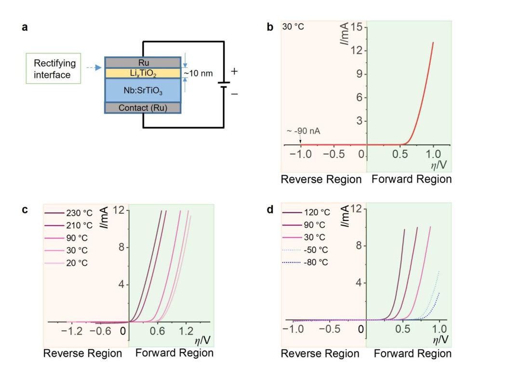
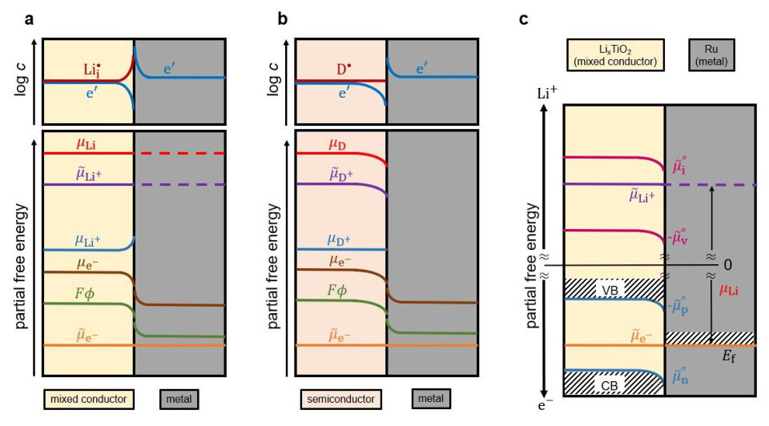
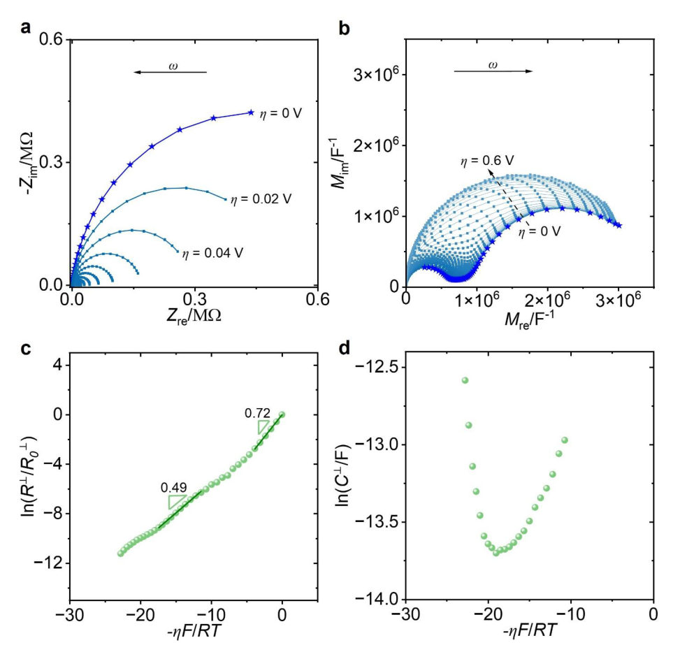
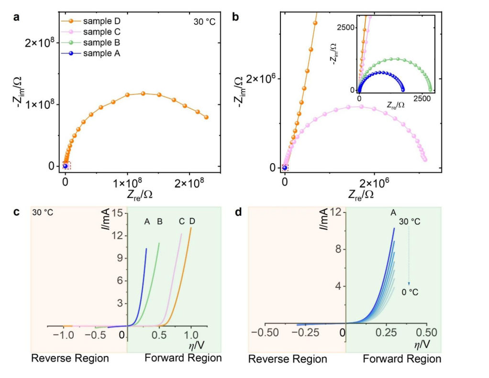
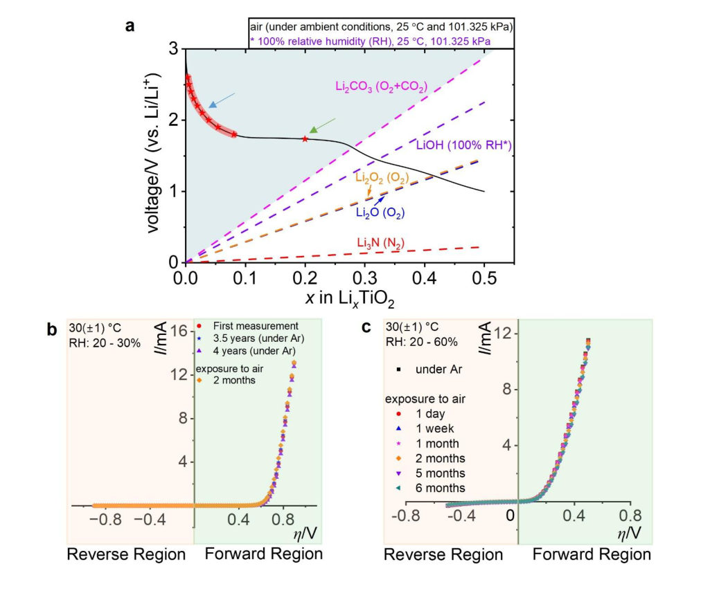
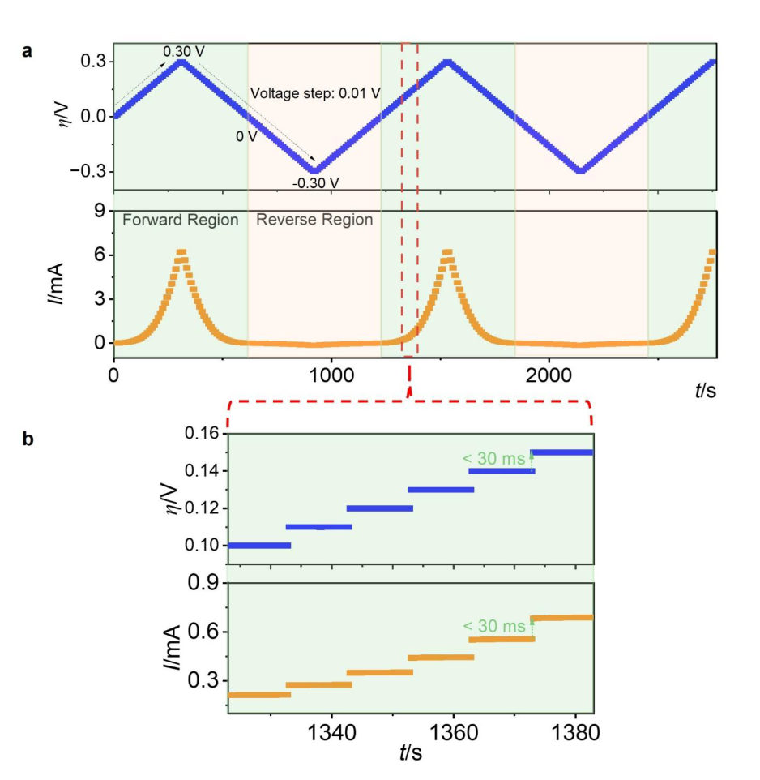
Summary. The paper introduces a new class of nanoionic diodes that operate in thermodynamic equilibrium, avoiding the drift issues of traditional semiconductors. By using mixed conductors like Li-intercalated TiO2, the device achieves stable, highly tunable rectification even at the nanoscale and high temperatures.
Why it may be interesting. not directly relevant
Main problem. Conventional semiconductor diodes (p-n and Schottky) rely on non-equilibrium frozen dopant profiles that are unstable and prone to drift when scaled to the nanoscale or exposed to high temperatures.
Main result. The development of a nanoionic diode based on an equilibrium Gouy-Chapman space charge layer that is stable against drift, highly tunable, and capable of high current-on/off ratios exceeding 6-7 orders of magnitude.
Method. The researchers used electrochemical tuning to control lithium content in TiO2 films on Ru and performed temperature-dependent I-V measurements, impedance spectroscopy, and dielectric modulus analysis.
Model / system. A nanoionic rectifier consisting of a mixed ionic/electronic conductor interface, specifically Li-intercalated TiO2 (anatase) films on a Ruthenium (Ru) substrate, operating under a Gouy-Chapman model.
Key observables. Current-on/off ratio, rectification function, resistance (R_perpendicular), capacitance (C_perpendicular), point of zero charge (PZC), and chemical diffusion coefficient.
Important parameters / regimes. Mobility hierarchy (u_electron >> u_ion >> 0), temperature range (-196 C to 230 C), lithium content (x), and nanometer-scale screening lengths.
Assumptions / limitations. Assumed activation energy of 0.5 eV for diffusion calculations and that the Debye length is smaller than the lattice parameter for space charge control.
Figures summary. Schematic of the device; I-V curves showing rectification and lithium-content dependence; impedance and dielectric modulus plots for identifying interfacial vs. bulk contributions and the point of zero charge; energy level diagrams under different bias conditions.
Paper structure. Introduction of the instability problem in conventional diodes, description of the nanoionic equilibrium mechanism, experimental setup and material characterization, demonstration of rectification and stability, and discussion of scalability and diffusion dynamics.
We report on a new type of rectifier which is in full contact equilibrium and thus, if down-sized to the nanoscale, shows no drift even if exposed to elevated temperatures and/or extreme waiting times. This is in contrast to existing diodes which rely on frozen doping profiles and are hence non-equilibrium devices. Our rectifiers are related to Schottky diodes but employ "dopants" whose mobilities are high enough to follow the electrical field quickly but low enough to not compete with the electrons in terms of conductivities. In order to realize such a device based on mixed conductors, we use nanosized TiO2 films on Ru as a substrate which can store Li at the interface according to a job-sharing mechanism (Li-ions on the TiO2 side, electrons on the Ru side). The excellent functionality of this nanoionic device is demonstrated (e.g., current on-off ratio can exceed 6-7 orders of magnitude) and the additional advantages stressed (such as ease of preparation and tuning the characteristics electrochemically).
Authors: Aoxuan Wang, Fabrice Toussaint, Thomas Gibaud
Type: experiment · Category: disordered systems and neural networks · PDF: https://arxiv.org/pdf/2604.27876v1
Analysis basis: abstract only; PDF text extraction failed or PDF unavailable
Summary. This study demonstrates that ultrasound can control the flow of dense suspensions by shifting the onset of shear thickening to higher shear rates. It reveals that acoustic waves destabilize the internal force networks through localized hydrodynamic fluctuations. This provides a mechanism for using sound to prevent flow instabilities in industrial processing.
Why it may be interesting. not directly relevant
Main problem. Understanding the physical origin of how high-power ultrasound reduces the apparent viscosity and modifies the discontinuous shear thickening (DST) transition in dense adhesive suspensions.
Main result. Ultrasound does not directly reduce viscosity but shifts the DST transition toward higher shear rates by destabilizing force networks through fluctuating hydrodynamic forces.
Method. The researchers used a rheo-ultrasound setup to study dense adhesive cornstarch suspensions under acoustic modulation and analyzed stress probability distributions.
Model / system. Dense adhesive cornstarch suspensions characterized by fragile, load-bearing force networks embedded in heterogeneous density-wave structures.
Key observables. Apparent viscosity, shear rate, stress probability distributions, and the shear-thickening transition threshold.
Important parameters / regimes. Shear rate, ultrasound power/frequency, and the separation of time scales between acoustic oscillations and suspension dynamics.
Assumptions / limitations. The suspension can be modeled as an effectively immobile porous medium subjected to high-frequency interstitial flows during the acoustic period.
Paper structure. The paper introduces the problem of DST-induced instabilities, describes the rheo-ultrasound experimental setup, presents the observation of the shifted transition via stress distribution collapse, proposes a mechanism involving hydrodynamic fluctuations and time-scale separation, and concludes with the implications for controlling flows.
Discontinuous shear thickening (DST) in dense suspensions leads to flow instabilities that limit processing in many systems. While high-power ultrasound has been reported to reduce the apparent viscosity of such materials, the origin of this effect remains unclear. Here, we investigate dense adhesive cornstarch suspensions, where shear thickening arises from fragile, load-bearing force networks embedded in heterogeneous density-wave structures. Using a rheo-ultrasound setup, we show that ultrasound does not directly reduce viscosity but instead shifts the shear-thickening transition toward higher shear rates. This is evidenced by the collapse of stress probability distributions onto master curves, revealing a continuous evolution toward more fluid-like states without a sharp threshold. We interpret these results through a separation of time scales, in which the suspension behaves as an effectively immobile porous medium subjected to high-frequency interstitial flows. Fluidization then arises from a combination of boundary slip, bulk destabilization of force networks by drag-force fluctuations, and localized acoustic streaming. Beyond these mechanisms, we propose that ultrasound modifies the stability of force networks by introducing fluctuating hydrodynamic forces at the pore scale. As a result, larger stresses or shear rates are required to sustain jammed states, leading to a continuous renormalization of the DST transition. These findings provide a consistent physical picture of acoustic fluidization in adhesive suspensions and establish ultrasound as a powerful tool to control discontinuous shear thickening in confined flows.
← Index · ← Previous · Next →